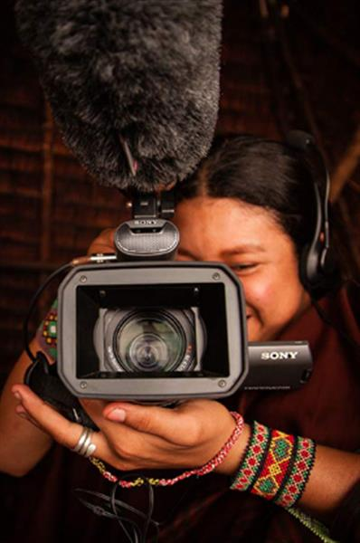

'Fashion and Sustainability: Look Good, Feel Good, Do Good' – Models parade sustainable clothing representing different regions of the world during the fashion showcase.
'Fashion and Sustainability: Look Good, Feel Good, Do Good' – Models parade sustainable clothing representing different regions of the world during the fashion showcase.
PHOTO:UN Photo/Manuel Elias
Celebrating the creative economy in 2021
After a year of pandemic-induced lockdowns, there couldn’t be a better time to appreciate the creative economy. The United Nations is doing just this as it marks 2021 as the International Year of the Creative Economy for Sustainable Development. UNCTAD, alongside UNESCO, WIPO, UNIDO, the WTO will drive the annual celebrations and observations of the year.
UNCTAD Acting Secretary-General Isabelle Durant said the resolution was timely. “The creative industries are critical to the sustainable development agenda. They stimulate innovation and diversification, are an important factor in the burgeoning services sector, support entrepreneurship, and contribute to cultural diversity,” she said.
Creativity and innovation in problem-solving
There may be no universal understanding of creativity. The concept is open to interpretation from artistic expression to problem-solving in the context of economic, social and sustainable development. Therefore, the United Nations designated 21 April as World Creativity and Innovation Day to raise the awareness of the role of creativity and innovation in all aspects of human development.
Wealth of Nations
Creativity and innovation, at both the individual and group levels, have become the true wealth of nations in the 21st century, according to the findings of the special edition of the Creative Economy Report 'Widening local development pathways', co-published by the United Nations Educational, Scientific and Cultural Organization (UNESCO) and the UN Development Programme (UNDP) through the UN Office for South-South Cooperation (UNOSSC).
Creativity and Culture

UNESCO’s International Fund for Culture and Diversity funds indigenous filmmakers in Brazil.
The creative economy –which includes audiovisual products, design, new media, performing arts, publishing and visual arts– is a highly transformative sector of the world economy in terms of income generation, job creation and export earnings. Culture is an essential component of sustainable development and represents a source of identity, innovation and creativity for the individual and community. At the same time, creativity and culture have a significant non-monetary value that contributes to inclusive social development, to dialogue and understanding between peoples.
Economic Growth Strategies
Cultural and creative industries should be part of economic growth strategies, according to the UNESCO report on culture and sustainable development. These industries are among the most dynamic sectors in the world economy, generating $2.25 billion in revenue and 29.5 million jobs worldwide. In that spirit, countries are harnessing the potential of high-growth areas of the market for economic returns and poverty alleviation.
New Momentum
On #WCID, the world is invited to embrace the idea that innovation is essential for harnessing the economic potential of nations. Innovation, creativity and mass entrepreneurship can provide new momentum for economic growth and job creation. It can expand opportunities for everyone, including women and youth. It can provide solutions to some of the most pressing problems such as poverty eradication and the elimination of hunger.
SOURCE: UNITED NATIONS